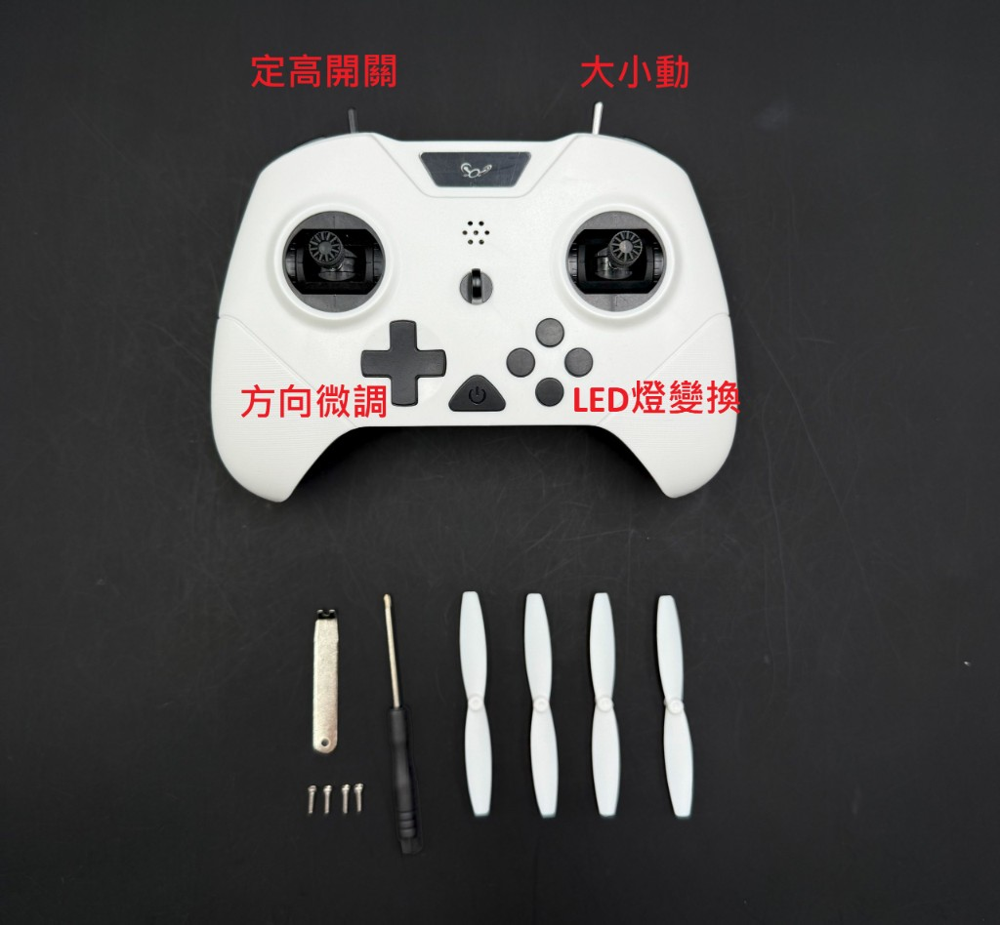

什麼是空心杯（Coreless）
有刷馬達的一種：轉子是輕薄杯形線圈、沒有鐵芯，慣量小、起動快、體積輕，適合 ≤110 g 球機。
- 電流經碳刷／換向器換向 → 故稱「有刷」。
- 轉速隨電壓與負載變；無電子換相，不需無刷 ESC 那套時序。
- 常見於玩具機、入門球機、STEM 教具。
一句話定位：有刷（空心杯）球機是教育入門／FIDA Class 20主流；本站其餘頁面以無刷 FAI F9A-B（≤300 g）備賽為主。兩者場地、重量、能否改裝皆不同，勿混用規格。
官方與採購參考： FIDA 國際總會 · Skyball（韓原廠／Helsel） · 宇宙機器人（台灣教具通路）
讀法：左邊是本頁有刷／Class 20；右邊是本站無刷 F9A-B 規則檢錄。
| 項目 | 有刷／空心杯（本頁） | 無刷 F9A-B（本站主力） |
|---|---|---|
| 常見賽制 | FIDA Class 20（休閒／教育／入門競技） | FAI F9 Drone Sport · F9A-B |
| 球徑 | 20 cm ±1 cm | 20 cm +2 cm（須裝進 Ø22 cm 圈） |
| 總重上限 | ≤110 g（含電池、接收） | ≤300 g |
| 馬達型式 | 實務主流為有刷空心杯（規則驗重量／外形，未強制馬達種類） | 無刷（BLDC）最多 4 顆 |
| 電池 | 常見 2S 7.4 V · 約 450 mAh | 最高 4S；單芯 ≤4.25 V |
| 場地 Skyfence | 8 m × 4 m × 高 3 m | 6 m × 3 m × 高 3 m（建議尺寸；較 Class 20 小） |
| 球門 | 內徑 30 cm ±1 cm（外徑約 50 cm；中心高 1.8–2.2 m） | 內徑 40 cm（外徑建議 70 cm；底線內側 1 m） |
| 外框單開口 | ≤70 cm² | ≤150 cm² |
| 可得分球員 | 每隊最多 2 名射手 | 每隊 1 名射手 |
| 改裝 | Class 20 禁止改裝提昇性能 | 可自組，須符合 FAI 規格與 fail-safe |
| 飛控／調參 | 原廠封閉飛控；定高／大小動／烏龜翻正 | Betaflight 等；本站有 設定模擬 |
| 續航（實務） | 約 5–6 分鐘／顆電 | 視 4S 高 C 與油門，見 續航 |
| 單局結構 | 3 set × 3 分鐘（主辦可改） | 依 FAI／主辦 |
別搞混：「20 cm 球」兩邊都有，但 FIDA Class 20 是 ≤110 g／場 8×4×3 m／門 30 cm／最多 2 射手；FAI F9A-B 是 ≤300 g／場 6×3×3 m／門 40 cm／僅 1 射手。無刷機打 Class 20 幾乎必超重；有刷規格也不能直接拿去過 FAI 檢錄。
有刷馬達的一種：轉子是輕薄杯形線圈、沒有鐵芯，慣量小、起動快、體積輕，適合 ≤110 g 球機。
無刷用三相電＋ESC 電子換相，效率高、壽命長、推力大，是 F9A-B 攻擊／防守主力。
| 環節 | 常見規格 | 備註 |
|---|---|---|
| 馬達 | 4 × 空心杯有刷（正反槳對角） | 磨損件；備機必備 |
| 驅動 | 機載有刷驅動板／一體飛控 | 多數不可刷 Betaflight |
| 電壓 | 2S LiPo 7.4 V（標稱） | 例：Skyball BALKIN 450 mAh 25C |
| 槳 | 小型塑膠正／反槳 | 碰撞易斷；套件含備槳 |
| 外框 | PP／PC 球形防護罩 | Class 20：單面開口 ≤70 cm² |
| LED | 紅／藍隊色；射手另標 | 規則要求可辨識 |
| 功能 | 定高、大小動（雙速率）、烏龜翻正 | 入門必用定高 |
依據 FIDA Dronesoccer Rule Book · Class 20（2025-10-01 第 5 修訂）。爭議以 dronesoccer.org 最新 PDF 為準。
| 項目 | FIDA Class 20 | 對照 FAI F9A-B |
|---|---|---|
| 球體結構 | 圓形外骨骼包覆 | 同為球形防護 |
| 直徑 | 20 cm ±1 cm | 20 cm +2 cm（22 cm 圈） |
| 比賽重量 | ≤110 g | ≤300 g |
| 場地 | 8 m × 4 m × 高 3 m | 6 m × 3 m × 高 3 m（建議） |
| 球門 | 內徑 30 cm ±1 cm | 內徑 40 cm（外徑建議 70 cm） |
| 單面開口 | ≤70 cm² | ≤150 cm² |
| 射手 | 最多 2 名可得分 | 僅 1 名可得分 |
| LED | 紅／藍可切；射手須可辨識標示 | 主條 ≥16、尾燈 ≥6 |
| 同場機種 | 同場不得混用不同型號球機 | 各自符合規格即可 |
| 官方球機 | 協會認證機可免賽前規格重測；原則限官方球 | 自組須過檢錄 |
| 項目 | 規定 |
|---|---|
| 外框尺寸 | 短邊 4 m × 長邊 8 m × 高 3 m（約 2:1） |
| 地面 | 平坦、無障礙；避免過硬地面；球機能穩定直立 |
| 中線 | 依長邊中點劃半場線 |
| 起飛點 | 距短邊 1.5 m；線或五點標示（多在球門下方一排） |
| 飛行員區 | 設於兩短邊外側，寬 2 m；長度不超過短邊寬；後方與維修區分隔 |
| 網牆 | 須可透視；網材受 3 m/s 撞擊偏斜 ≤10 cm；或垂直線材 1–2 mm、間距 10 cm |
| 出界 | 比賽中球機不得飛出 Skyfence |
以下依 FIDA Class 20 規則書整理，供課堂與社團對照；正式裁決以主辦與裁判為準。
出現下列情形可判給對方點球：
| 類別 | 內容 |
|---|---|
| 基本 | 服裝或隊服（便服須有可辨識配件，如帽子／背心／大於 A4 標誌）；合規球機；綁定遙控器；備電 |
| 可選 | FPV；備機（電池須拆開分開放）；電壓表與緊急維修工具 |
| 禁止 | 干擾對手的燈光；干擾對手的無線電；干擾比賽的音訊；任何為提升性能的改裝（Class 20 明文） |
雙方賽前應互查裝備；有疑義須事先揭露。禁止裝備若賽前棄用可照常比賽；若雙方事前同意可免罰；賽中被認定影響比賽 → 該 set 判負。
| 等級 | 典型情形 |
|---|---|
| 警告 | 非選手滯留飛行員區；輕微不文明；擅自移動場地設備圖利；開始訊號前移動球機；不服從合法指令 |
| 累計 2 警告 | 對方獲 1 次點球機會 |
| 該 set 判負 | 嚴重不文明；故意改隊色；用手／腳／器具移動球機圖利；重複同警告意圖拖延或抗議 |
| 整場判負 | 故意用球機威脅他人安全；嚴重不文明；非報名選手非法上場 |
以下以教育／Class 20 常見 RTF 為主，對照無刷「自組＋測功」路線。無刷零件圖文見 新手入門。

Class 20 多半是「開箱即飛」：球機、遙控、電池、備槳一套。重量貼近 110 g，不能像無刷那樣換高 C、大馬達。下面卡片是常見 RTF；本隊正式備賽仍走無刷 F9A-B。
韓原廠 Helsel／Skyball 入門競技套裝，開箱即飛。
台灣常見教育用 20 cm 有刷球機套件（紅／白／藍）。
TC200I 套件一覽（點圖放大）

遙控器按鍵與備品（點圖放大）| 產品 | 大致定位 | 備註 |
|---|---|---|
| FEEBY／PALAS | 超入門／DIY 教育 | 體驗飛行與組裝，非主力賽用 |
| BALKIN V2 | Class 20 有刷競技／訓練 | 本頁主力對照機 |
| TIKE 系列 | 進階／F9A-B 向球殼與整機 | 規格偏競技，可能非純 110 g 有刷 |
| STRIKER V3 | FAI F9A-A／大型競技 | 屬無刷大型組，見無刷頁 |
完整目錄與價格：https://www.skyballdrone.com/
| 項目 | 建議 | 對照無刷 |
|---|---|---|
| 電壓 | 2S 7.4 V（標稱） | 無刷常用 3S／4S |
| 容量 | 約 450 mAh（BALKIN 規格） | 見 電池 高 C 850–1100 |
| 放電 | ≥25C 級入門球機常見 | 無刷要更高 C 與實際內阻 |
| 管理 | 編號、記錄電壓；勿過放；分開放備機電池 | 單芯 ≤4.25 V 檢錄 |
| 一場用量 | 3 set × 換電；建議每機備 2–3 顆 | 本場無刷常見 9 電檢錄 |
對照無刷「ELRS 開放協議遙控」：有刷多為原廠綁定手把，按鍵功能固定。
| 位置（常見） | 名稱 | 用途 |
|---|---|---|
| 左上撥桿 | 定高開關 | 開啟後嘗試維持高度，適合新手與陣地防守 |
| 右上撥桿 | 大小動（雙速率） | 低速穩、高速衝；練習先用小動 |
| 左下十字 | 方向微調 | 懸停漂移時微調俯仰／橫滾／偏航 |
| 右下四鍵 | LED 變換 | 切換隊色紅／藍等（依機種） |
| 左搖桿 | 油門／偏航 | Mode 2 常見配置 |
| 右搖桿 | 俯仰／橫滾 | 轉向與推進 |
| 中央 | 電源 | 先開遙控再開機（或依說明書順序） |
與無刷遙控差異：無刷見 遙控器採購（ELRS、多協議、自訂 AUX）。有刷手把通常無法改行程曲線到 Betaflight 等級；比賽靠熟悉定高與大小動切換節奏。
比照無刷 規則檢錄 表格，改寫成有刷場可勾選版。
| 檢錄項目 | 合格標準 | 實務建議 |
|---|---|---|
| 總重 | ≤110 g（含電池） | 用比賽電實秤；目標 ≤108 g |
| 外徑 | 20 cm ±1 cm | 卡尺／樣圈預檢 |
| 開口 | 單面 ≤70 cm² | 勿私切開更大孔 |
| 機種一致性 | 同場不得混用不同型號 | 整隊統一採購 |
| 改裝 | 禁止性能向改裝 | 外觀貼紙勿蓋住 LED／射手標 |
| LED／射手標 | 紅藍可辨；射手標牢固 | 賽前通電檢查；備標示帶 |
| 遙控綁定 | 一人一機、訊號不干擾他機 | 多機同時開機預飛測 |
| 電池 | 備電足夠；備機電池分離 | 編號；每 set 間換電 |
| 禁帶物品 | 干擾燈、干擾無線電、干擾音訊 | 飛行員區只留必要裝備 |
| 人員 | 名單內選手；教練不上場 | set 前完成換人登記 |
國際無人機足球總會 · 規則與 Class 20／40
韓原廠球機、殼件、遙控與場地周邊
台灣教具／足球無人機採購與課程
本站無刷路線（進階）： F9A-B 規則檢錄 · 馬達 · 電池 · 組裝 · LED · FAI 2026 譯本 · FAI 官方規則
規則摘要譯自 FIDA Class 20 Rule Book（2025-10-01）；非官方譯本。裝備規格整理自公開產品頁與教學套件標示，採購前請再核對當期型號。